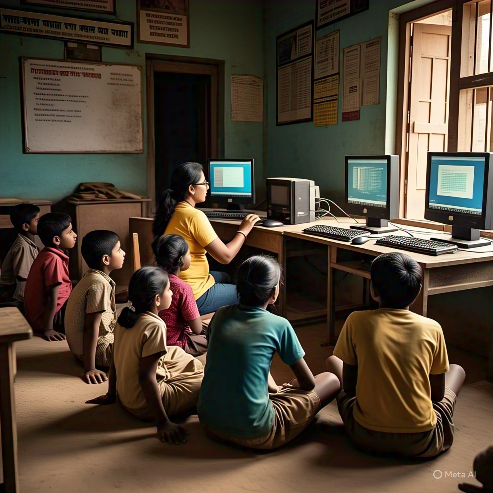
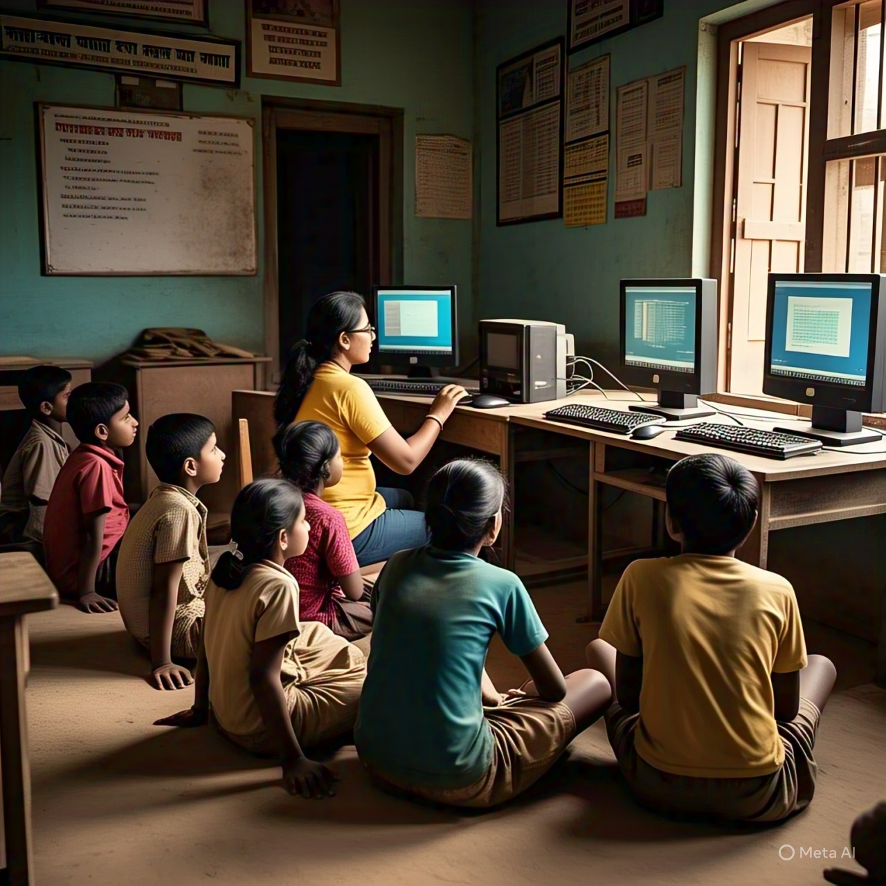
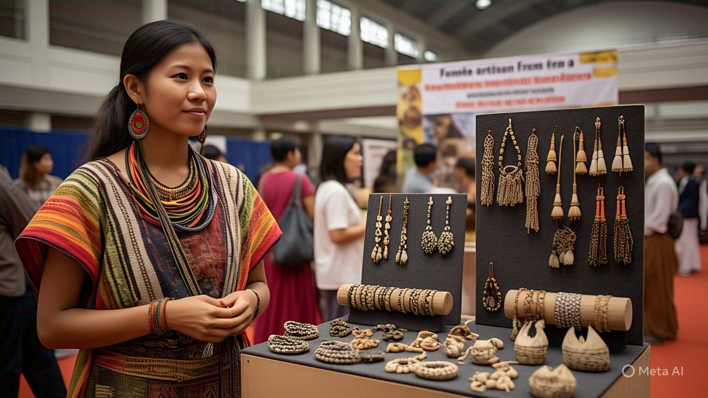
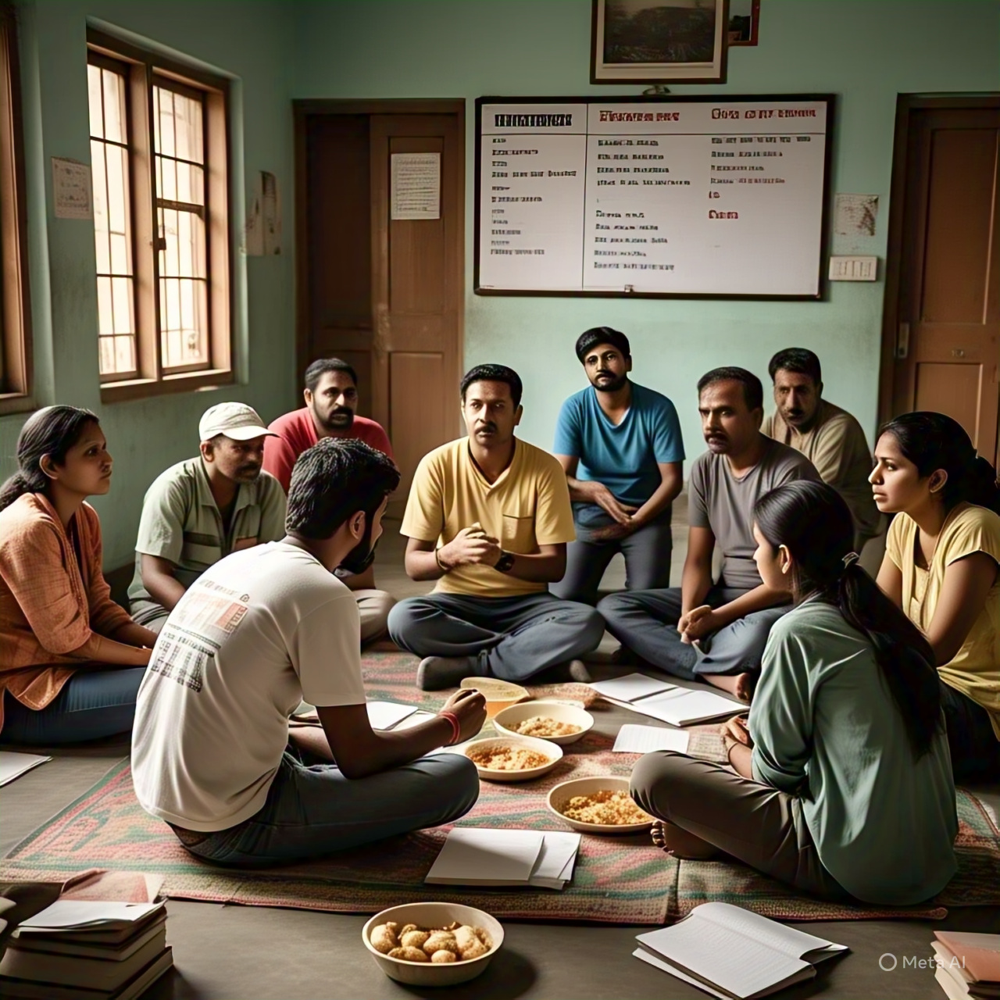
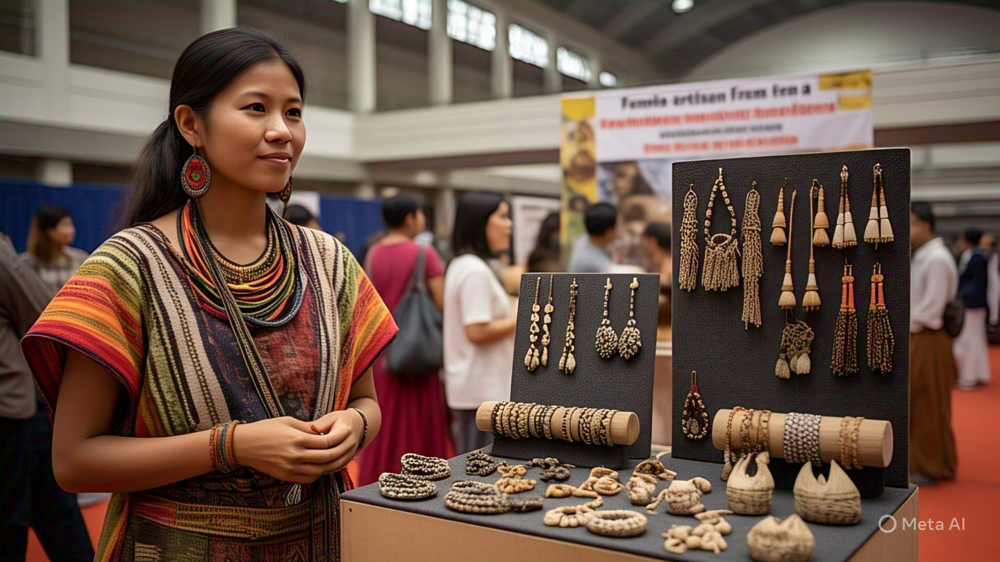
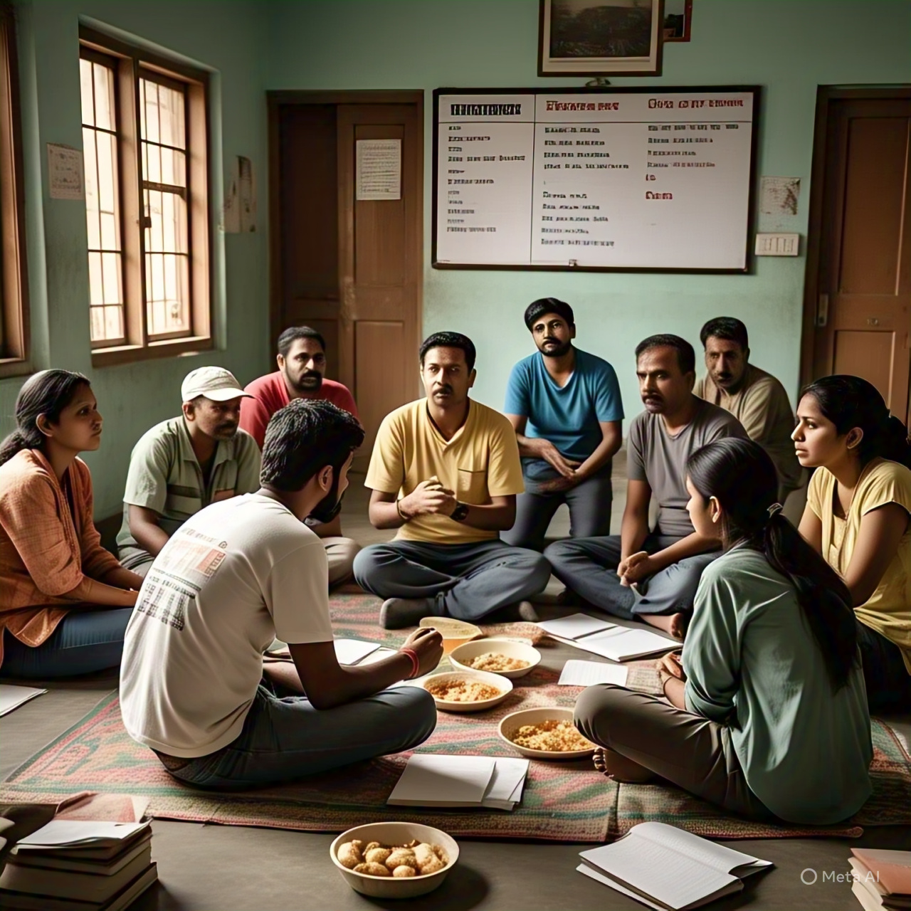

Education: Shiksha Disha
We believe education is the most powerful tool for change. Our education programs aim to bridge learning gaps and promote digital and academic literacy, especially in rural and marginalized communities.
- After-school learning centers
- Digital literacy programs for rural kids
- Teacher training & capacity building
- Mentorship for dropout prevention
We believe education is the most powerful tool for transformative change.
At Shiksha Disha, our mission is to ensure that every child, regardless of their background or location, has access to quality learning opportunities.
Our education programs are specially designed to bridge academic gaps and promote both digital and traditional literacy,
with a strong focus on empowering students from rural and marginalized communities.
We operate after-school learning centers that provide a safe and supportive environment where children receive academic assistance,
engage in creative activities, and build essential life skills. Our digital literacy programs introduce rural children to the world of technology,
equipping them with foundational computer knowledge and internet navigation skills that are crucial in today’s digital age.
Through Shiksha Disha, we strive to build a future where every child has the tools, guidance, and opportunities they need to thrive.

 


